calls |> group_by(model) |> summarise(total = sum(aht), mean = mean(aht))# A tibble: 5 × 3
model total mean
<fct> <dbl> <dbl>
1 M1 45.0 5.00
2 M2 48.0 5.33
3 M3 36.0 3.99
4 M4 33.9 3.76
5 M5 35.6 3.96ניתוח נתונים סטטיסטי · הרצאה 5
2026-11-08
\(a\) רמות של פקטור אחד, \(n\) תצפיות בכל רמה, \(N = an\):
\[ y_{ij} = \mu + \tau_i + \varepsilon_{ij} \qquad \sum_{i=1}^{a}\tau_i = 0 \qquad \varepsilon_{ij} \overset{iid}{\sim} N(0, \sigma^2) \]
\[ H_0: \tau_1 = \dots = \tau_a = 0 \quad (\mu_1 = \dots = \mu_a) \qquad H_1: \tau_i \neq 0 \text{ עבור } i \text{ כלשהו} \]
שלוש הנחות: נורמליות, אי-תלות, שונות שווה בכל הרמות.
הדוגמה: מוקד שירות בוחר את מודל השפה לעוזר AI. 5 מודלים (M1, M2 קטנים, M3 בינוני, M4, M5 גדולים), 9 ימים לכל מודל, והתגובה היא משך הטיפול הממוצע בפנייה (דקות). האם יש הבדל, ואיזה מודל להפעיל?
\[ \underbrace{\sum_{i,j}(y_{ij} - \bar y_{\cdot\cdot})^2}_{SS_T} = \underbrace{n\sum_{i}(\bar y_{i\cdot} - \bar y_{\cdot\cdot})^2}_{SS_{Tr}\text{: בין הרמות}} + \underbrace{\sum_{i,j}(y_{ij} - \bar y_{i\cdot})^2}_{SS_E\text{: בתוך הרמות}} \]
| מקור | סכום ריבועים | דרגות חופש | ממוצע ריבועים | \(F_0\) |
|---|---|---|---|---|
| בין הרמות | \(SS_{Tr}\) | \(a - 1\) | \(MS_{Tr}\) | \(MS_{Tr}/MS_E\) |
| שגיאה | \(SS_E\) | \(N - a\) | \(MS_E = \hat\sigma^2\) | |
| סך הכול | \(SS_T\) | \(N - 1\) |
\[ e_{ij} = y_{ij} - \hat y_{ij} = y_{ij} - \bar y_{i\cdot} \]
השאריות הן האומדים לשגיאות \(\varepsilon_{ij}\). כל ההנחות נבדקות דרכן:
| ההנחה | בדיקה גרפית | בדיקה במבחן |
|---|---|---|
| נורמליות | גרף Q-Q | Shapiro–Wilk, KS |
| אי-תלות | שאריות לפי סדר האיסוף | |
| שונות שווה | boxplot, שאריות מול ממוצעי הרמות | Bartlett, Levene |
אם השאריות נורמליות, הנקודות על קו ישר (השיפוע הוא בערך \(\hat\sigma\)).
ggplot(qq, aes(z, resid)) +
geom_abline(intercept = 0, slope = sqrt(mse), colour = nanas_pal[["grey"]], linetype = "dashed") +
geom_point(size = 2.5) +
labs(title = "השאריות קרובות לקו, עם זנב שמאלי ארוך מעט",
subtitle = "קו מקווקו: שיפוע σ̂ = √MSE",
x = "Theoretical quantile (z)", y = "Residual (min)")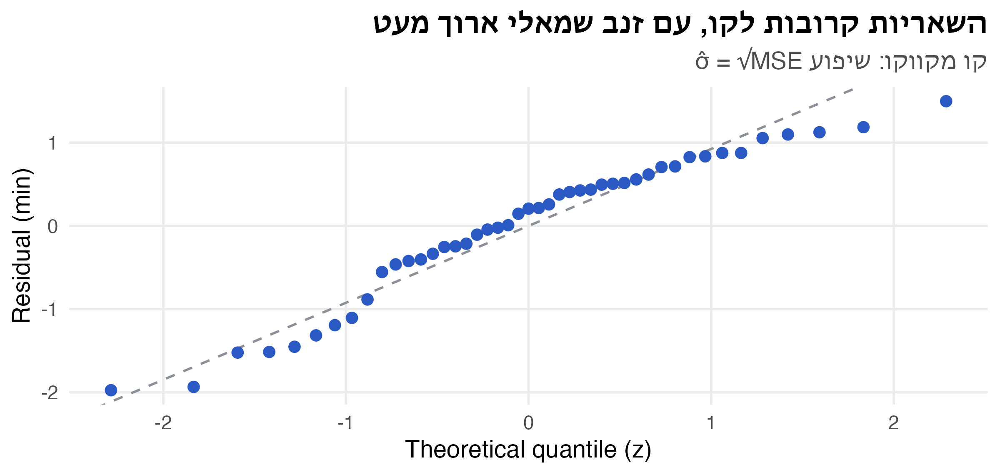
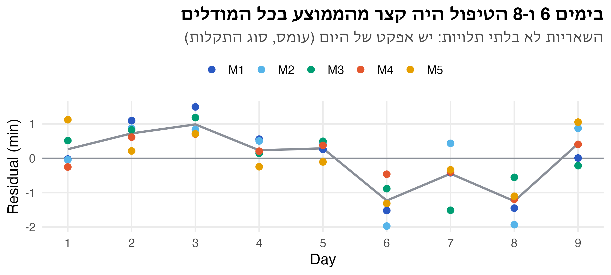
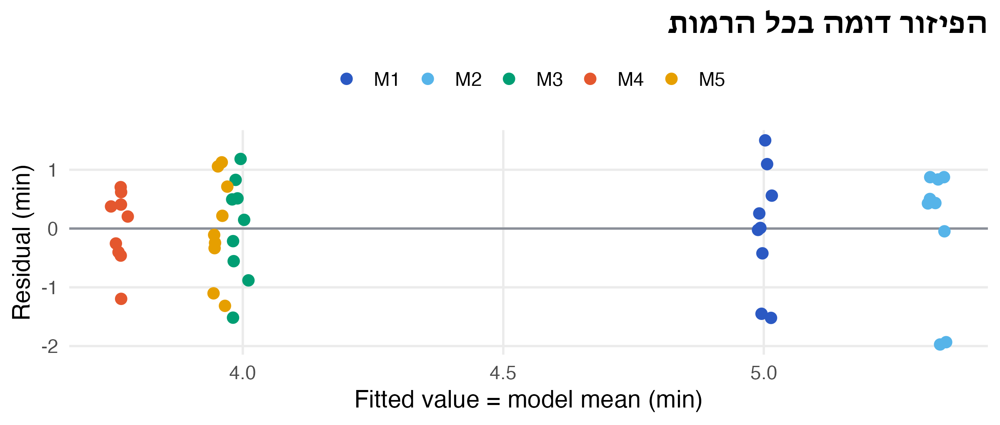
\(H_0: \sigma_1^2 = \dots = \sigma_a^2\) מול \(H_1\): לפחות שונות אחת שונה.
מבחן F הקלאסי מאחד את כל \(S_i^2\) ל-\(MS_E\) אחד. כשהשונויות שונות, \(MS_E\) אחד לא מתאים לאף קבוצה. Welch נותן לכל קבוצה את השונות שלה:
\[ w_i = \frac{n_i}{S_i^2}, \qquad \bar y_w = \frac{\sum_i w_i \bar y_{i\cdot}}{\sum_i w_i}, \qquad F_W \approx \frac{\frac{1}{a-1}\sum_i w_i(\bar y_{i\cdot} - \bar y_w)^2}{1 + \text{(small correction)}} \]
oneway.test(). במודלים (שונויות דומות) המסקנה זהה ל-F הקלאסי:בכל התרחישים התוחלת זהה בשלוש הקבוצות (\(H_0\) נכונה). משתנים רק גודל הקבוצות והפיזור בתוכן. כך נראה ניסוי אחד מכל תרחיש:
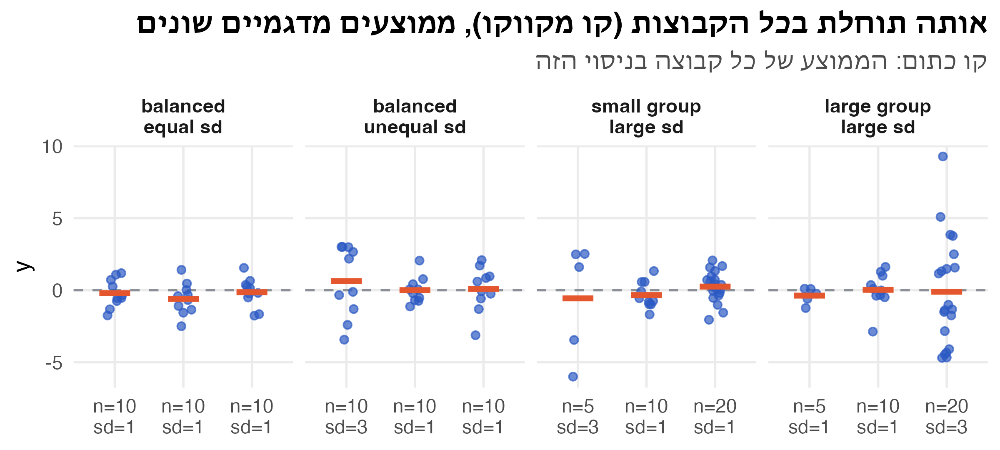
שלוש קבוצות עם אותה תוחלת (\(H_0\) נכונה). בכמה מהניסויים מבחן F דוחה ב-\(\alpha = 0.05\)?
sim_reject <- function(n, sd, reps = 4000) {
g <- factor(rep(seq_along(n), n))
rejected <- replicate(reps, {
y <- rnorm(sum(n), 0, rep(sd, n))
c(oneway.test(y ~ g, var.equal = TRUE)$p.value, oneway.test(y ~ g)$p.value) < 0.05
})
rowMeans(rejected) # rejection rate: classic F, Welch
}
set.seed(77)
sim_res <- tibble(design = c("balanced, equal sd", "balanced, unequal sd",
"small group has large sd", "large group has large sd"),
n = list(c(10, 10, 10), c(10, 10, 10), c(5, 10, 20), c(5, 10, 20)),
sd = list(c(1, 1, 1), c(3, 1, 1), c(3, 1, 1), c(1, 1, 3))) |>
mutate(rate = map2(n, sd, sim_reject),
F = map_dbl(rate, 1), Welch = map_dbl(rate, 2))
sim_res |> select(design, F, Welch)# A tibble: 4 × 3
design F Welch
<chr> <dbl> <dbl>
1 balanced, equal sd 0.0472 0.0452
2 balanced, unequal sd 0.0788 0.0492
3 small group has large sd 0.241 0.0592
4 large group has large sd 0.00875 0.0475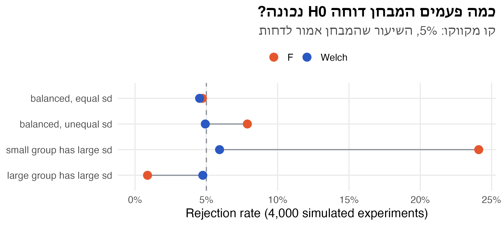
oneway.test()) נשאר קרוב ל-5%לשירות יש 200 שרתים זהים, לכאורה. צוות התשתיות חושד שיש שרתים “איטיים” (חומרה ישנה, שכן רועש באותו מחשב פיזי).
ggplot(servers, aes(server, latency)) +
geom_point(colour = nanas_pal[["primary"]], size = 2.5, alpha = 0.8,
position = position_jitter(width = 0.08, seed = 4)) +
stat_summary(fun = mean, geom = "crossbar", width = 0.4, colour = nanas_pal[["accent"]]) +
labs(title = "8 שרתים שהוגרלו מתוך 200",
subtitle = "6 בקשות לכל שרת · קו כתום: הממוצע של השרת",
x = "Server", y = "Latency (ms)")\[ y_{ij} = \mu + \tau_i + \varepsilon_{ij} \qquad \tau_i \sim N(0, \sigma_\tau^2) \qquad \varepsilon_{ij} \sim N(0, \sigma^2) \]
\[ V(y_{ij}) = \sigma_\tau^2 + \sigma^2 \]
ההשערות הן על \(\sigma_\tau^2\), ולא על ה-\(\tau_i\) עצמם:
\[ H_0: \sigma_\tau^2 = 0 \qquad H_1: \sigma_\tau^2 > 0 \]
סכומי הריבועים, הטבלה ו-\(F_0 = MS_{Tr}/MS_E\) זהים למודל הקבוע. משתנה הפרשנות של התוחלות:
\[ E(MS_E) = \sigma^2 \qquad E(MS_{Tr}) = \sigma^2 + n\sigma_\tau^2 \]
תחת \(H_0\) (\(\sigma_\tau^2 = 0\)) שניהם אומדים את \(\sigma^2\), ולכן שוב \(F_0 \sim F_{a-1,\,N-a}\). מכאן גם אומדים לרכיבי השונות:
\[ \hat\sigma^2 = MS_E \qquad \hat\sigma_\tau^2 = \frac{MS_{Tr} - MS_E}{n} \]
מתאם תוך-קבוצתי (intraclass correlation, ICC): איזה חלק מהשונות הכוללת הוא בין הרמות?
\[ \rho = \frac{\sigma_\tau^2}{\sigma_\tau^2 + \sigma^2} \]
עובדה אחת: שונות מדגמית היא אומד חסר הטיה לשונות.
\[ \bar y_{i\cdot} = \mu + \tau_i + \bar\varepsilon_{i\cdot} \quad\Rightarrow\quad V(\bar y_{i\cdot}) = \sigma_\tau^2 + \frac{\sigma^2}{n} \]
הרמות הוגרלו, ולכן \(\bar y_{1\cdot}, \dots, \bar y_{a\cdot}\) הם מדגם של \(a\) ערכים בלתי תלויים מאותה התפלגות. השונות המדגמית שלהם, \(S^2_{\bar y} = \frac{1}{a-1}\sum_i (\bar y_{i\cdot} - \bar y_{\cdot\cdot})^2\), חסרת הטיה: \(E(S^2_{\bar y}) = \sigma_\tau^2 + \frac{\sigma^2}{n}\)
ב-\(SS_{Tr}\) כל תצפית מוחלפת בממוצע הרמה שלה: \(SS_{Tr} = \sum_i\sum_{j=1}^{n}(\bar y_{i\cdot} - \bar y_{\cdot\cdot})^2\). האיבר לא תלוי ב-\(j\), ולכן הוא נספר \(n\) פעמים:
\[ MS_{Tr} = \frac{SS_{Tr}}{a-1} = n \cdot \frac{\sum_i(\bar y_{i\cdot} - \bar y_{\cdot\cdot})^2}{a-1} = n S^2_{\bar y} \quad\Rightarrow\quad E(MS_{Tr}) = n\sigma_\tau^2 + \sigma^2 \]
במודל הקבוע \(\tau_i\) הם קבועים. בשלב 1 נשאר רק \(\sigma^2/n\), ובמקום \(\sigma_\tau^2\) מופיע \(\frac{\sum\tau_i^2}{a-1}\): הפיזור של האפקטים שנבחרו, במקום השונות של אוכלוסיית האפקטים.
Df Sum Sq Mean Sq F value Pr(>F)
server 7 5433 776 4.12 0.0017 **
Residuals 40 7535 188
---
Signif. codes: 0 '***' 0.001 '**' 0.01 '*' 0.05 '.' 0.1 ' ' 1 sigma2_hat sigma2_tau_hat icc
188.3674 97.9592 0.3421 | אפקטים קבועים | אפקטים אקראיים | |
|---|---|---|
| הרמות | כל הרמות שמעניינות אותנו | מדגם מקרי מתוך הרבה רמות |
| דוגמאות | 5 המודלים שהמוקד שקל, 3 גרסאות של מוצר, 4 נוסחים של פרומפט | שרתים מתוך צי, מוקדנים מתוך מוקד, אצוות של חומר גלם |
| \(\tau_i\) | קבועים, \(\sum \tau_i = 0\) | משתנים מקריים, \(N(0, \sigma_\tau^2)\) |
| \(H_0\) | \(\tau_1 = \dots = \tau_a = 0\) | \(\sigma_\tau^2 = 0\) |
| מה אומדים | \(\mu_i\) והפרשים ביניהן | רכיבי שונות \(\sigma_\tau^2\), \(\sigma^2\), ICC |
| המסקנה חלה על | הרמות שנבדקו | כל אוכלוסיית הרמות |
שאלת מבחן: “אם נחזור על הניסוי, האם נבדוק את אותן רמות?” אם כן: קבוע. אם נגריל רמות חדשות: אקראי.
\[ \eta^2 = \frac{SS_{Tr}}{SS_T} \]
| השאלה | הכלי | ב-R |
|---|---|---|
| האם יש הבדל בין \(a\) רמות של פקטור? | מבחן F, \(F_{a-1,\,N-a}\) | summary(aov(y ~ g)) |
| מהי השונות של הרעש? | \(\hat\sigma^2 = MS_E\) | Mean Sq של Residuals |
| מהי התוחלת ברמה \(i\)? | \(\bar y_{i\cdot} \pm t\sqrt{MS_E/n}\) | |
| האם ההנחות מתקיימות? | Q-Q, שאריות לפי סדר, Bartlett/Levene | resid(), bartlett.test() |
| שונויות לא שוות? | Welch ANOVA | oneway.test() |
| כמה חזרות צריך? | ניתוח עוצמה | power.anova.test() |
| הרמות הן מדגם מאוכלוסייה? | אפקטים אקראיים, \(\hat\sigma_\tau^2\), ICC | אותו aov(), פרשנות אחרת |
| כמה הפקטור מסביר? | \(\eta^2 = SS_{Tr}/SS_T\) |
Df Sum Sq Mean Sq F value Pr(>F)
model 4 18.0 4.51 5.28 0.0016 **
Residuals 40 34.1 0.85
---
Signif. codes: 0 '***' 0.001 '**' 0.01 '*' 0.05 '.' 0.1 ' ' 1שתי דרכים לענות:
לפני הניסוי, ראש צוות ה-AI במוקד שאל שתי שאלות:
את השאלות אפשר לכתוב כהשערות על צירוף לינארי של התוחלות:
\[ H_0: \tfrac{1}{2}(\mu_1 + \mu_2) = \tfrac{1}{2}(\mu_4 + \mu_5) \quad\Longleftrightarrow\quad H_0: \mu_1 + \mu_2 - \mu_4 - \mu_5 = 0 \]
\[ H_0: \mu_3 = \mu_4 \quad\Longleftrightarrow\quad H_0: \mu_3 - \mu_4 = 0 \]
ניגוד (contrast) הוא צירוף לינארי של התוחלות, שסכום המקדמים שלו אפס:
\[ \Gamma = \sum_{i=1}^{a} c_i \mu_i, \qquad \sum_{i=1}^{a} c_i = 0 \]
| השאלה | \(c_1\) | \(c_2\) | \(c_3\) | \(c_4\) | \(c_5\) |
|---|---|---|---|---|---|
| קטנים מול גדולים | 1 | 1 | 0 | −1 | −1 |
| M3 מול M4 | 0 | 0 | 1 | −1 | 0 |
האומד: מחליפים כל תוחלת בממוצע של הרמה:
\[ \hat\Gamma = \sum_{i=1}^{a} c_i \bar y_{i\cdot} \]
התוחלת: \(E(\hat\Gamma) = \sum c_i \mu_i = \Gamma\). תחת \(H_0\) היא אפס.
השונות: הממוצעים בלתי תלויים, וכל אחד עם שונות \(\sigma^2/n\):
\[ V(\hat\Gamma) = \sum_{i=1}^{a} c_i^2 \, V(\bar y_{i\cdot}) = \frac{\sigma^2}{n}\sum_{i=1}^{a} c_i^2 \]
מבחן t: מציבים \(MS_E\) במקום \(\sigma^2\):
\[ t_0 = \frac{\sum c_i \bar y_{i\cdot}}{\sqrt{\frac{MS_E}{n}\sum c_i^2}} \sim t_{N-a} \quad \text{(תחת } H_0\text{)} \]
מעלים את \(t_0\) בריבוע, מונה ומכנה, ומציבים \(\bar y_{i\cdot} = y_{i\cdot}/n\) (הסכומים במקום הממוצעים):
\[ t_0^2 = \frac{\left(\sum c_i \bar y_{i\cdot}\right)^2}{\frac{MS_E}{n}\sum c_i^2} = \frac{\left(\sum c_i y_{i\cdot}\right)^2 / n^2}{\frac{MS_E}{n}\sum c_i^2} = \frac{1}{MS_E}\cdot\underbrace{\frac{\left(\sum c_i y_{i\cdot}\right)^2}{n\sum c_i^2}}_{SS_C} \]
\[ F_0 = t_0^2 = \frac{SS_C / 1}{MS_E} \sim F_{1,\; N-a} \]
כי \(SS_C\) מדבר באותה שפה כמו טבלת ANOVA:
מתי להישאר עם t?
סכומי משכי הטיפול: \(y_{1\cdot} = 45.02\), \(y_{2\cdot} = 48.01\), \(y_{3\cdot} = 35.95\), \(y_{4\cdot} = 33.87\), \(y_{5\cdot} = 35.60\).
קטנים מול גדולים, \(c = (1, 1, 0, -1, -1)\):
\[ \sum c_i y_{i\cdot} = 45.02 + 48.01 - 33.87 - 35.60 = 23.56 \qquad SS_{C_1} = \frac{23.56^2}{9 \cdot 4} = 15.42 \]
\[ F_0 = \frac{15.42}{0.854} = 18.06 > F_{0.95;\,1,\,40} = 4.08 \]
דוחים: עם המודלים הגדולים הטיפול קצר יותר. \(\hat\Gamma/2 = (5.17 - 3.86) = 1.31\) דקות בממוצע.
M3 מול M4, \(c = (0, 0, 1, -1, 0)\):
\[ SS_{C_2} = \frac{(35.95 - 33.87)^2}{9 \cdot 2} = 0.24 \qquad F_0 = \frac{0.24}{0.854} = 0.28 < 4.08 \]
לא דוחים: אין עדות להבדל בין M3 ל-M4.
ידנית, לפי הנוסחאות:
contrast_test <- function(c, totals, n, mse, df_e) {
ss <- sum(c * totals)^2 / (n * sum(c^2))
c(estimate = sum(c * totals / n), SS = ss, F = ss / mse,
p = pf(ss / mse, 1, df_e, lower.tail = FALSE))
}
totals <- tapply(calls$aht, calls$model, sum)
rbind(small_vs_large = contrast_test(c(1, 1, 0, -1, -1), totals, 9, mse, 40),
M3_vs_M4 = contrast_test(c(0, 0, 1, -1, 0), totals, 9, mse, 40)) estimate SS F p
small_vs_large 2.6178 15.4187 18.0627 0.0001243
M3_vs_M4 0.2311 0.2404 0.2816 0.5986067בפקודה מוכנה, חבילת emmeans:
contrast estimate SE df t.ratio p.value
small_vs_large 1.309 0.308 40 4.250 0.0001
M3_vs_M4 0.231 0.436 40 0.531 0.5986שני ניגודים \(c\) ו-\(d\) הם אורתוגונליים אם
\[ \sum_{i=1}^{a} c_i d_i = 0 \]
\[ SS_{C_1} + SS_{C_2} + \dots + SS_{C_{a-1}} = SS_{Tr} \]
כלומר: ניגודים אורתוגונליים מפרקים את \(SS_{Tr}\) ל-\(a - 1\) שאלות נפרדות, כל אחת עם דרגת חופש אחת.
כל רמה מול כל הרמות שאחריה:
| רמה 1 | רמה 2 | רמה 3 | \(\cdots\) | רמה \(a-1\) | רמה \(a\) | |
|---|---|---|---|---|---|---|
| \(C_1\) | \(-(a-1)\) | 1 | 1 | \(\cdots\) | 1 | 1 |
| \(C_2\) | 0 | \(-(a-2)\) | 1 | \(\cdots\) | 1 | 1 |
| \(C_3\) | 0 | 0 | \(-(a-3)\) | \(\cdots\) | 1 | 1 |
| \(\vdots\) | \(\ddots\) | |||||
| \(C_{a-1}\) | 0 | 0 | 0 | \(\cdots\) | \(-1\) | 1 |
| השאלה | \(c_1\) | \(c_2\) | \(c_3\) | \(c_4\) | \(c_5\) |
|---|---|---|---|---|---|
| \(C_1\): קטנים מול גדולים | 1 | 1 | 0 | −1 | −1 |
| \(C_2\): M1 מול M2 | 1 | −1 | 0 | 0 | 0 |
| \(C_3\): M4 מול M5 | 0 | 0 | 0 | 1 | −1 |
| \(C_4\): M3 מול כל השאר | 1 | 1 | −4 | 1 | 1 |
small_vs_large M1_vs_M2 M4_vs_M5 M3_vs_rest
small_vs_large 4 0 0 0
M1_vs_M2 0 2 0 0
M4_vs_M5 0 0 2 0
M3_vs_rest 0 0 0 20 small_vs_large M1_vs_M2 M4_vs_M5 M3_vs_rest
estimate 2.618 -0.332 -0.192 2.078
SS 15.419 0.497 0.166 1.943
F 18.063 0.582 0.195 2.276
p 0.000 0.450 0.661 0.139sum_SS_C SS_Tr
18.02 18.02 tibble(contrast = colnames(ss_c), SS = ss_c["SS", ]) |>
mutate(share = SS / sum(SS), contrast = fct_reorder(contrast, SS)) |>
ggplot(aes(share, contrast)) +
geom_col(fill = nanas_pal[["primary"]]) +
geom_text(aes(label = percent(share, 1)), hjust = -0.15) +
scale_x_continuous(labels = percent, limits = c(0, 1)) +
labs(title = "86% מההבדלים בין המודלים: קטנים מול גדולים",
subtitle = "החלק של כל ניגוד ב-SS_Tr = 18.02", x = "Share of SS_Tr", y = NULL)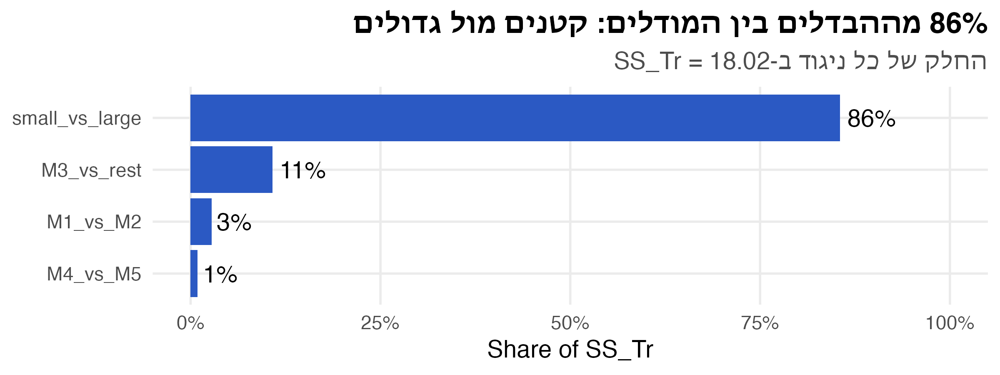
כש-\(n_i\) שונים, מגדירים את הניגוד על הסכומים \(y_{i\cdot}\):
\[ C = \sum_{i=1}^{a} c_i y_{i\cdot} \]
\(y_{i\cdot}\) הוא סכום של \(n_i\) תצפיות, ולכל אחת תוחלת \(\mu + \tau_i\). לכן \(E(y_{i\cdot}) = n_i(\mu + \tau_i)\), ומליניאריות התוחלת:
\[ E(C) = \sum_{i=1}^{a} c_i\, E(y_{i\cdot}) = \sum_{i=1}^{a} c_i n_i (\mu + \tau_i) = \mu\sum_{i=1}^{a} n_i c_i + \sum_{i=1}^{a} n_i c_i \tau_i \]
הניגוד צריך למדוד רק הבדלים בין האפקטים \(\tau_i\), ולא את הרמה הכללית \(\mu\). כדי ש-\(\mu\) יתבטל, התנאי הוא:
\[ \sum_{i=1}^{a} n_i c_i = 0 \qquad\qquad SS_C = \frac{\left(\sum c_i y_{i\cdot}\right)^2}{\sum n_i c_i^2} \]
מבחן התקיים בשלוש כיתות: 40 סטודנטים בכיתה 1, ו-30 בכל אחת מכיתות 2 ו-3. כיתה 3 סמוכה לאתר בנייה. הסטודנטים שלה מבקשים פקטור. האם הטענה מוצדקת?
# A tibble: 3 × 4
room n total mean
<chr> <int> <dbl> <dbl>
1 room1 40 3014 75.4
2 room2 30 2258 75.3
3 room3 30 2015 67.2 Df Sum Sq Mean Sq F value Pr(>F)
room 2 1394 697 4.08 0.02 *
Residuals 97 16573 171
---
Signif. codes: 0 '***' 0.001 '**' 0.01 '*' 0.05 '.' 0.1 ' ' 1ה-ANOVA דוחה (\(p = 0.02\)). אבל השאלה ספציפית: כיתה 3 מול שתי האחרות.
השאלה: האם הממוצע בכיתה 3 נמוך מהממוצע של כיתות 1 ו-2 יחד?
\[ 40 \cdot 1 + 30 \cdot 1 + 30\,c_3 = 0 \;\Longrightarrow\; c_3 = -\tfrac{7}{3} \]
מה הניגוד מודד? כי \(3 \cdot 70 = 7 \cdot 30 = 210\):
\[ C = 3(y_{1\cdot} + y_{2\cdot}) - 7\,y_{3\cdot} = 210\left(\underbrace{\frac{y_{1\cdot} + y_{2\cdot}}{70}}_{\bar y_{1,2}} - \underbrace{\frac{y_{3\cdot}}{30}}_{\bar y_{3\cdot}}\right) \]
כלומר \(C/210 = \bar y_{1,2} - \bar y_{3\cdot}\): ההפרש בין הממוצע של כל 70 הסטודנטים בכיתות 1 ו-2 לבין הממוצע בכיתה 3.
מהשקף הקודם: \(y_{1\cdot} = 3014\), \(y_{2\cdot} = 2258\), \(y_{3\cdot} = 2015\), ו-\(MS_E = 170.9\) (ה-Mean Sq של Residuals).
\[ C = 3 \cdot 3014 + 3 \cdot 2258 - 7 \cdot 2015 = 1711 \qquad \frac{C}{210} = 8.15 \]
\[ SS_C = \frac{C^2}{\sum n_i c_i^2} = \frac{1711^2}{40 \cdot 9 + 30 \cdot 9 + 30 \cdot 49} = \frac{1711^2}{2100} = 1394.1 \]
\[ F_0 = \frac{SS_C}{MS_E} = \frac{1394.1}{170.9} = 8.16 > F_{0.95;\,1,\,97} = 3.94 \]
sum_n_c C diff SS_C F p
0.000e+00 1.711e+03 8.148e+00 1.394e+03 8.159e+00 5.242e-03 עם 5 מודלים יש 10 זוגות. אם בודקים כל זוג במבחן t ב-\(\alpha = 0.05\), ו-\(H_0\) נכונה בכל הזוגות:
| מספר המבחנים \(m\) | \(P(\text{לפחות טעות אחת}) = 1 - 0.95^m\) |
|---|---|
| 1 | 0.05 |
| 10 (5 רמות) | 0.40 |
| 45 (10 רמות) | 0.90 |
| 100 | 0.99 |
5 מודלים זהים, 9 תצפיות לכל אחד. משווים כל זוג במבחן t ב-\(\alpha = 0.05\). מספר הזוגות: \(\binom{5}{2} = \frac{5 \cdot 4}{2} = 10\) (כל אחד מ-5 המודלים מול 4 האחרים, וכל זוג נספר פעמיים). חוזרים על הניסוי 4,000 פעמים.
P_any mean_rejections
0.2690 0.4983 n_reject
0 1 2 3 4 5 6
2924 540 284 144 92 11 5 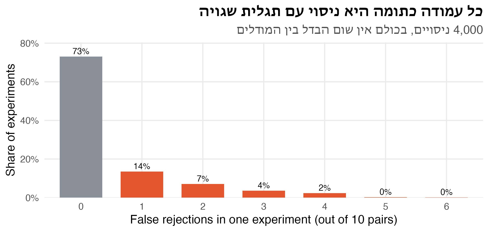
שתי השיטות משוות הפרש בין ממוצעים לסף. שתיהן משתמשות בשגיאת התקן של ממוצע, \(s_{\bar y} = \sqrt{MS_E / n}\):
| השיטה | הסף | שיעור הטעות למשפחה (FWER) |
|---|---|---|
| Duncan | \(r_\alpha(p, f)\, s_{\bar y}\), תלוי במרחק \(p\) בין הממוצעים | גבוה מ-\(\alpha\), וגדל עם מספר הרמות |
| Tukey HSD | \(q_\alpha(a, f)\, s_{\bar y}\), סף אחד לכל הזוגות | בדיוק \(\alpha\) (בניסוי מאוזן) |
למודלים: \(s_{\bar y} = \sqrt{0.854/9} = 0.308\), ו-\(f = N - a = 40\).
Duncan’s multiple range test משווה את כל הזוגות, אחרי שמבחן ה-F דחה. החידוש: לא כל הזוגות מקבלים אותו סף.
למה? נניח שאין שום הבדל בין 5 המודלים. נמיין את 5 הממוצעים:
המרחק \(p\): כמה ממוצעים נמצאים בטווח בין שני הממוצעים שמשווים, כולל שניהם. במודלים:
| דירוג | 1 | 2 | 3 | 4 | 5 |
|---|---|---|---|---|---|
| מודל | M2 | M1 | M3 | M5 | M4 |
| ממוצע | 5.33 | 5.00 | 3.99 | 3.96 | 3.76 |
דוגמאות:
| הזוג | M2, M1 | M2, M3 | M1, M4 | M2, M4 |
|---|---|---|---|---|
| הממוצעים בטווח | M2, M1 | M2, M1, M3 | M1, M3, M5, M4 | כל החמישה |
| \(p\) | 2 (שכנים) | 3 | 4 | 5 (הקצוות) |
\[ R_p = r_\alpha(p, f)\cdot s_{\bar y} \qquad s_{\bar y} = \sqrt{\frac{MS_E}{n}} \]
\(r_\alpha(p, f)\) הם מקדמי Duncan מטבלה, ו-\(f = N - a\) הן דרגות החופש של \(MS_E\). המקדם גדל עם \(p\)
המקדמים הם ערכים של התפלגות ה-studentized range: ההתפלגות של \((\bar y_{max} - \bar y_{min})/s_{\bar y}\), הטווח של \(p\) ממוצעים מחולק בשגיאת התקן שלהם, כש-\(H_0\) נכונה. זו אותה התפלגות שבה משתמשת שיטת Tukey. ההבדל הוא ברמת המובהקות: לטווח של \(p\) ממוצעים, Duncan משתמש ב-
\[ \alpha_p = 1 - (1 - \alpha)^{p - 1} \]
ככל ש-\(p\) גדל, \(\alpha_p\) גדלה, והשיטה “סלחנית” יותר. ב-R אין צורך בטבלה:
[,1] [,2] [,3] [,4]
p 2.000 3.000 4.000 5.000
alpha_p 0.050 0.098 0.143 0.185
r 2.858 3.005 3.102 3.171
R_p 0.880 0.926 0.955 0.977מיון: M2 (5.33) · M1 (5.00) · M3 (3.99) · M5 (3.96) · M4 (3.76)
means <- sort(tapply(calls$aht, calls$model, mean), decreasing = TRUE)
R_p <- setNames(r_duncan * sqrt(mse / 9), 2:5)
duncan <- combn(names(means), 2, simplify = FALSE) |>
map(\(pair) {
pos <- match(pair, names(means))
tibble(high = pair[1], low = pair[2], p = diff(pos) + 1,
diff = means[pair[1]] - means[pair[2]], R_p = R_p[as.character(diff(pos) + 1)])
}) |>
list_rbind() |>
mutate(significant = diff > R_p) |>
arrange(desc(p))
duncan# A tibble: 10 × 6
high low p diff R_p significant
<chr> <chr> <dbl> <dbl> <dbl> <lgl>
1 M2 M4 5 1.57 0.977 TRUE
2 M2 M5 4 1.38 0.955 TRUE
3 M1 M4 4 1.24 0.955 TRUE
4 M2 M3 3 1.34 0.926 TRUE
5 M1 M5 3 1.05 0.926 TRUE
6 M3 M4 3 0.231 0.926 FALSE
7 M2 M1 2 0.332 0.880 FALSE
8 M1 M3 2 1.01 0.880 TRUE
9 M3 M5 2 0.0389 0.880 FALSE
10 M5 M4 2 0.192 0.880 FALSE 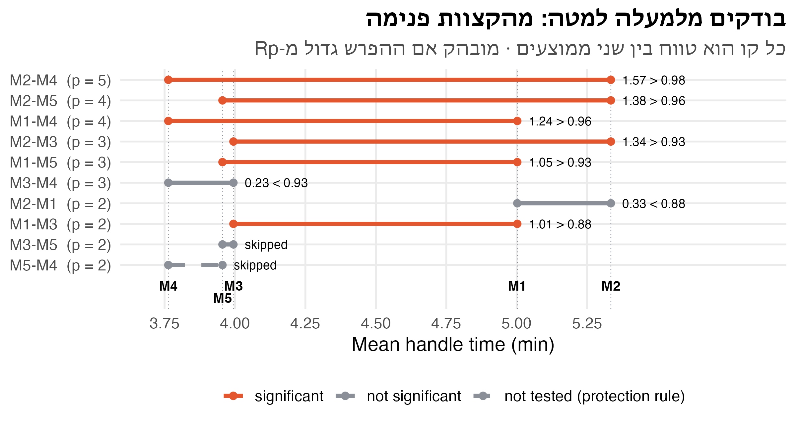
| M2 | M1 | M3 | M5 | M4 | |
|---|---|---|---|---|---|
| ממוצע | 5.33 | 5.00 | 3.99 | 3.96 | 3.76 |
| קבוצה | א | א | ב | ב | ב |
ההמלצה: להפעיל את אחד מ-M3, M4 או M5. משך הטיפול לא מבדיל ביניהם, ולכן את הבחירה ביניהם קובעים שיקולים אחרים, למשל עלות: M3 הוא המודל הבינוני, ו-M4 ו-M5 הם הגדולים והיקרים.
Tukey’s Honest Significant Difference: סף אחד לכל הזוגות, שמבטיח FWER \(= \alpha\) בדיוק (בניסוי מאוזן).
\[ HSD = q_\alpha(a, f)\cdot\sqrt{\frac{MS_E}{n}} \]
\[ q = \frac{\bar y_{max} - \bar y_{min}}{\sqrt{MS_E/n}} \]
רווחי סמך משותפים לכל ההפרשים: \((\bar y_{i\cdot} - \bar y_{k\cdot}) \pm HSD\). בניסוי לא מאוזן (Tukey–Kramer): \(q_\alpha(a, f)\sqrt{\frac{MS_E}{2}\left(\frac{1}{n_i} + \frac{1}{n_k}\right)}\).
\[ HSD = q_{0.05}(5, 40)\cdot 0.308 = 4.04 \cdot 0.308 = 1.244 \]
q HSD
4.039 1.244 # A tibble: 10 × 5
high low diff duncan tukey
<chr> <chr> <dbl> <lgl> <lgl>
1 M2 M4 1.57 TRUE TRUE
2 M2 M5 1.38 TRUE TRUE
3 M1 M4 1.24 TRUE FALSE
4 M2 M3 1.34 TRUE TRUE
5 M1 M5 1.05 TRUE FALSE
6 M3 M4 0.231 FALSE FALSE
7 M2 M1 0.332 FALSE FALSE
8 M1 M3 1.01 TRUE FALSE
9 M3 M5 0.0389 FALSE FALSE
10 M5 M4 0.192 FALSE FALSE Tukey multiple comparisons of means
95% family-wise confidence level
Fit: aov(formula = aht ~ model, data = calls)
$model
diff lwr upr p adj
M2-M1 0.33222 -0.9117 1.576159 0.9397
M3-M1 -1.00778 -2.2517 0.236159 0.1617
M4-M1 -1.23889 -2.4828 0.005048 0.0514
M5-M1 -1.04667 -2.2906 0.197270 0.1354
M3-M2 -1.34000 -2.5839 -0.096063 0.0292
M4-M2 -1.57111 -2.8150 -0.327174 0.0072
M5-M2 -1.37889 -2.6228 -0.134952 0.0233
M4-M3 -0.23111 -1.4750 1.012826 0.9836
M5-M3 -0.03889 -1.2828 1.205048 1.0000
M5-M4 0.19222 -1.0517 1.436159 0.9918diff: ההפרש בין הממוצעים (השורה \(-\) העמודה). M2-M1 = 0.33: עם M2 הטיפול ארוך מאשר עם M1 ב-0.33 דקותlwr, upr: רווח סמך משותף של 95%: \(\text{diff} \pm 1.244\). ב-95% מהניסויים כל עשרת הרווחים יכילו את ההפרש האמיתי יחדp adj: p-value מתוקן להשוואות מרובות. מובהק אם קטן מ-0.05, כלומר אם הרווח לא כולל את 0M4-M1: ההפרש 1.239, וה-HSD הוא 1.244. p adj = 0.051. לא מובהק, בהפרש של חמש אלפיות דקהTukeyHSD(fit_ai)$model |>
as_tibble(rownames = "pair") |>
mutate(pair = fct_reorder(pair, diff), significant = `p adj` < 0.05) |>
ggplot(aes(diff, pair, colour = significant)) +
geom_vline(xintercept = 0, colour = nanas_pal[["grey"]]) +
geom_errorbar(aes(xmin = lwr, xmax = upr), width = 0.25, linewidth = 1, orientation = "y") +
geom_point(size = 3) +
scale_colour_manual(values = c(`TRUE` = nanas_pal[["accent"]], `FALSE` = nanas_pal[["grey"]]),
labels = c(`TRUE` = "מובהק", `FALSE` = "לא מובהק")) +
labs(title = "שלושה זוגות מובהקים לפי Tukey: M2 מול M3, M4 ו-M5",
subtitle = "רווחי סמך משותפים 95% להפרשים · רווח שלא חוצה את 0 הוא מובהק",
x = "Difference in mean handle time (min)", y = NULL, colour = NULL)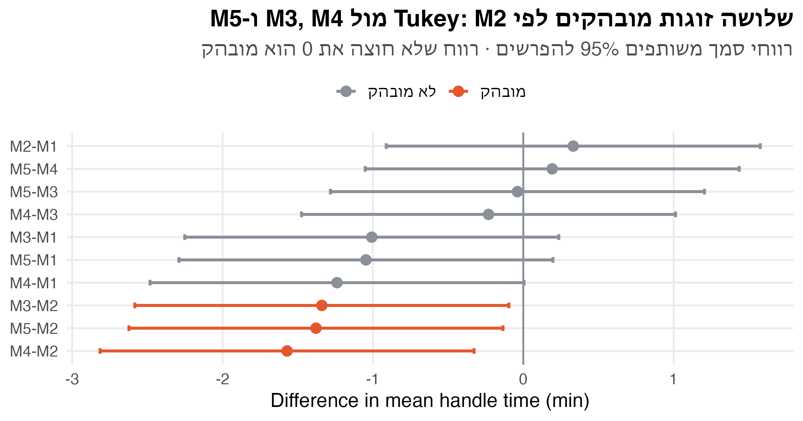
| זוג | הפרש | Duncan (\(R_p\)) | Tukey (1.244) |
|---|---|---|---|
| M2–M4 | 1.57 | ✓ (0.98) | ✓ |
| M2–M5 | 1.38 | ✓ (0.96) | ✓ |
| M2–M3 | 1.34 | ✓ (0.93) | ✓ |
| M1–M4 | 1.24 | ✓ (0.96) | ✗ |
| M1–M5 | 1.05 | ✓ (0.93) | ✗ |
| M1–M3 | 1.01 | ✓ (0.88) | ✗ |
| M2–M1, M3–M4, M3–M5, M5–M4 | ≤ 0.33 | ✗ | ✗ |
| המצב | השיטה | ב-R |
|---|---|---|
| מעט שאלות, מתוכננות מראש | ניגודים, \(\alpha\) רגילה | ידני, pf() |
| כל הזוגות, אחרי F מובהק | Tukey HSD | TukeyHSD() |
| כל הזוגות, כשהבחינה דורשת | Duncan | qtukey() + טבלה |
הכלל החשוב ביותר: מחליטים על השיטה לפני שמסתכלים על התוצאות. אם בוחרים את השיטה שנותנת את התוצאה ה”נכונה”, כל התיקון לא שווה כלום.
הדוגמה: זמן התגובה של API בארבעה אזורי ענן (regions), 12 בקשות מכל אזור. זמני תגובה מוטים ימינה, עם ערכים חריגים.
set.seed(162)
latency <- tibble(region = factor(rep(c("eu-west", "us-east", "il-central", "ap-south"), each = 12),
levels = c("eu-west", "us-east", "il-central", "ap-south")),
ms = round(rlnorm(48, log(rep(c(150, 155, 210, 220), each = 12)), 0.8)))
ggplot(latency, aes(ms, region)) +
geom_boxplot(width = 0.5, outlier.shape = NA, colour = "grey60") +
geom_point(colour = nanas_pal[["primary"]], size = 2.5, alpha = 0.7,
position = position_jitter(height = 0.1, seed = 3)) +
labs(title = "זמני תגובה מוטים, עם כמה בקשות איטיות מאוד",
subtitle = "12 בקשות מכל אזור",
x = "Latency (ms)", y = NULL)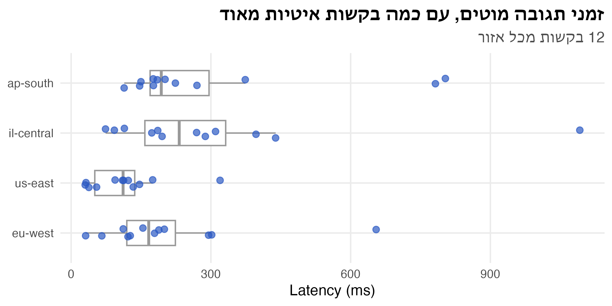
Df Sum Sq Mean Sq F value Pr(>F)
region 3 292464 97488 2.35 0.085 .
Residuals 44 1823008 41432
---
Signif. codes: 0 '***' 0.001 '**' 0.01 '*' 0.05 '.' 0.1 ' ' 1
Exact one-sample Kolmogorov-Smirnov test
data: rstandard(fit_lat)
D = 0.21, p-value = 0.02
alternative hypothesis: two-sidedtibble(r = sort(rstandard(fit_lat))) |>
mutate(z = qnorm((row_number() - 0.5) / n())) |>
ggplot(aes(z, r)) +
geom_abline(intercept = 0, slope = 1, colour = nanas_pal[["grey"]], linetype = "dashed") +
geom_point(colour = nanas_pal[["primary"]], size = 2.5) +
labs(title = "הזנב הימני ארוך מדי: כמה בקשות איטיות מאוד",
subtitle = "שאריות מתוקננות · קו מקווקו: N(0,1)",
x = "Theoretical quantile (z)", y = "Standardised residual")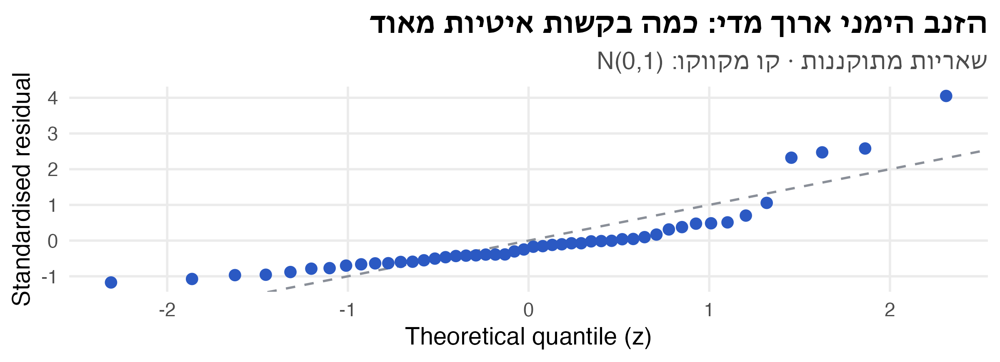
הכללה של מבחן סכום הדירוגים (הרצאה 1) ליותר משני מדגמים.
\[ y_{ij} = \mu + \tau_i + \varepsilon_{ij} \]
תחת \(H_0\) הדרגות מתפזרות באקראי בין הרמות. כמו במבחן סכום הדירוגים, כל דרגה מתפלגת אחיד על \(\{1, \dots, N\}\):
\[ E(R_{ij}) = \frac{N+1}{2} \qquad V(R_{ij}) = \frac{N^2 - 1}{12} \]
ב-ANOVA (בהנחת נורמליות):
\[ \frac{SS_{Tr}}{\sigma^2} = \frac{\sum_{i=1}^{a} n_i(\bar y_{i\cdot} - \bar y_{\cdot\cdot})^2}{\sigma^2} \sim \chi^2_{a-1} \]
ב-Kruskal–Wallis: אותו ביטוי, על הדרגות. \(\bar R_{i\cdot}\) הוא ממוצע הדרגות ברמה \(i\), ו-\(\sigma^2\) מוחלף בשונות הידועה של דרגה, \(\frac{N(N+1)}{12}\) (בקירוב):
\[ K = \frac{12}{N(N+1)}\sum_{i=1}^{a} n_i\left(\bar R_{i\cdot} - \frac{N+1}{2}\right)^2 = \frac{12}{N(N+1)}\sum_{i=1}^{a}\frac{R_{i\cdot}^2}{n_i} - 3(N+1) \]
מפעל טקסטיל בודק 5 רמות של אחוז כותנה בבד (15%–35%), 6 דגימות בכל רמה. האם אחוז הכותנה משפיע על חוזק המתיחה?
# A tibble: 5 × 5
cotton_pct n strength R R_bar
<fct> <int> <chr> <dbl> <dbl>
1 15 6 8.5, 9.9, 10.3, 11.6, 12.8, 15.2 58 9.67
2 20 6 10.6, 10.8, 11.3, 11.6, 12.3, 13.4 66.5 11.1
3 25 6 13.7, 14, 14.4, 14.5, 15, 15.5 123 20.5
4 30 6 15.1, 15.8, 15.9, 16, 16.2, 17 163 27.2
5 35 6 10, 10.3, 10.4, 10.9, 12.2, 14.1 54.5 9.08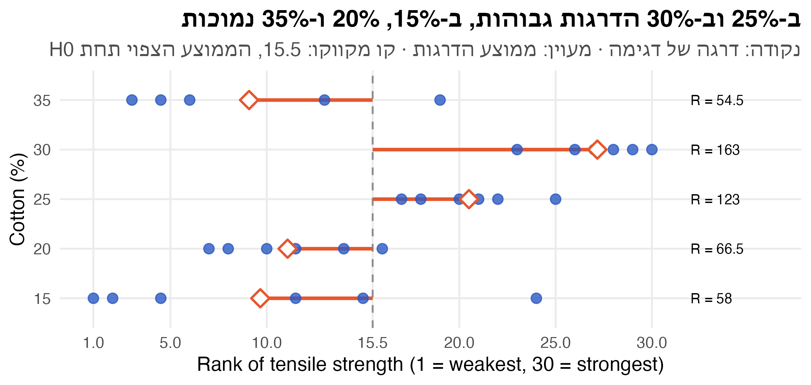
\(N = 30\), \(a = 5\), \(n_i = 6\). סכומי הדרגות: \(R_{i\cdot} = 58,\ 66.5,\ 123,\ 163,\ 54.5\).
\[ K = \frac{12}{30 \cdot 31}\cdot\frac{58^2 + 66.5^2 + 123^2 + 163^2 + 54.5^2}{6} - 3 \cdot 31 = 19.81 \]
\[ K = 19.81 > \chi^2_{0.95,\,4} = 9.49 \]
דוחים את \(H_0\): אחוז הכותנה משפיע על חוזק הבד.
Kruskal-Wallis rank sum test
data: ms by region
Kruskal-Wallis chi-squared = 12, df = 3, p-value = 0.009 Df Sum Sq Mean Sq F value Pr(>F)
region 3 7.42 2.473 4.75 0.0059 **
Residuals 44 22.91 0.521
---
Signif. codes: 0 '***' 0.001 '**' 0.01 '*' 0.05 '.' 0.1 ' ' 1bind_rows(tibble(scale = "ms", r = rstandard(fit_lat)),
tibble(scale = "log(ms)", r = rstandard(fit_lat_log))) |>
mutate(scale = fct_inorder(scale)) |>
group_by(scale) |>
arrange(r, .by_group = TRUE) |>
mutate(z = qnorm((row_number() - 0.5) / n())) |>
ggplot(aes(z, r)) +
geom_abline(intercept = 0, slope = 1, colour = nanas_pal[["grey"]], linetype = "dashed") +
geom_point(colour = nanas_pal[["primary"]], size = 2.5) +
facet_wrap(~ scale) +
labs(title = "אחרי הטרנספורמציה, השאריות יושבות על הקו",
subtitle = "שאריות מתוקננות · קו מקווקו: N(0,1)",
x = "Theoretical quantile (z)", y = "Standardised residual")אחרי Kruskal–Wallis מובהק, משווים זוגות במבחן סכום הדירוגים, ומתקנים להשוואות מרובות:
Pairwise comparisons using Wilcoxon rank sum exact test
data: latency$ms and latency$region
eu-west us-east il-central
us-east 0.468 - -
il-central 1.000 0.060 -
ap-south 1.000 0.003 1.000
P value adjustment method: bonferroni 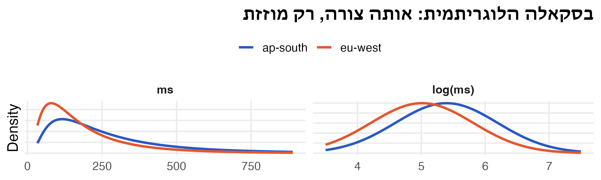
אחרי Kruskal–Wallis, איך אומדים ניגוד \(\Gamma = \sum c_i \tau_i\) בלי ממוצעים?
דוגמה קטנה: \(y_{1j} = \{3, 7, 8\}\) ו-\(y_{2j} = \{0, 1, 2\}\). החציון הכללי הוא 2.5, וחציוני הקבוצות הם 7 ו-1:
\[ \hat\tau_1 = 7 - 2.5 = 4.5 \qquad \hat\tau_2 = 1 - 2.5 = -1.5 \qquad \hat\tau_1 + \hat\tau_2 = 3 \neq 0 \]
הרעיון: במקום להשוות כל רמה ל”מרכז” משותף, אומדים בכמה כל רמה גבוהה מכל רמה אחרת, ורק אז ממצעים.
\[ Z_{ik} = \underset{j,\,m}{\text{median}}\{y_{ij} - y_{km}\} \]
\(Z_{ik}\) עונה על השאלה: “בכמה, בדרך כלל, תצפית מרמה \(i\) גבוהה מתצפית מרמה \(k\)?”
\[ \hat\tau_i = \frac{1}{a}\sum_{k=1}^{a} Z_{ik} \]
\(y_{1j} = \{3, 7, 8\}\) ו-\(y_{2m} = \{0, 1, 2\}\). כל 9 ההפרשים \(y_{1j} - y_{2m}\):
| \(y_{2m} = 0\) | \(y_{2m} = 1\) | \(y_{2m} = 2\) | |
|---|---|---|---|
| \(y_{1j} = 3\) | 3 | 2 | 1 |
| \(y_{1j} = 7\) | 7 | 6 | 5 |
| \(y_{1j} = 8\) | 8 | 7 | 6 |
ממוינים: \(1, 2, 3, 5, \mathbf{6}, 6, 7, 7, 8\). החציון: \(Z_{12} = 6\), ולכן \(Z_{21} = -6\).
| רמה 1 | רמה 2 | \(\hat\tau_i\) (ממוצע השורה) | |
|---|---|---|---|
| רמה 1 | 0 | 6 | \((0 + 6)/2 = 3\) |
| רמה 2 | −6 | 0 | \((-6 + 0)/2 = -3\) |
\(\hat\tau_1 + \hat\tau_2 = 0\), וההפרש ביניהם, 6, הוא ההזזה האמודה בין הרמות.
השאלה: האם הקצוות (15% ו-35%) חלשים מ-30%? \(\Gamma = \frac{1}{2}(\tau_1 + \tau_5) - \tau_4\).
15 20 25 30 35
15 0.00 -0.65 -3.55 -5.0 -0.10
20 0.65 0.00 -3.00 -4.5 0.55
25 3.55 3.00 0.00 -1.5 3.60
30 5.00 4.50 1.50 0.0 5.10
35 0.10 -0.55 -3.60 -5.1 0.00 15 20 25 30 35 sum Gamma
-1.86 -1.26 1.73 3.22 -1.83 0.00 -5.06 \(\hat\Gamma = \tfrac{1}{2}\big((-1.86) + (-1.83)\big) - 3.22 = -5.06\): בד עם 15% או 35% כותנה חלש בכ-5 יחידות מבד עם 30% כותנה.
| השאלה | הכלי | ב-R |
|---|---|---|
| שאלה ספציפית, מתוכננת מראש | ניגוד, \(SS_C\), \(F_{1,\,N-a}\) | ידני, pf() |
| לפרק את \(SS_{Tr}\) לשאלות נפרדות | \(a - 1\) ניגודים אורתוגונליים | |
| כל הזוגות (גרסת הבחינה) | Duncan, \(R_p = r_\alpha(p, f)\,s_{\bar y}\) | qtukey((1-α)^(p-1), p, f) |
| כל הזוגות, FWER \(= \alpha\) | Tukey HSD, \(q_\alpha(a, f)\,s_{\bar y}\) | TukeyHSD() |
| נתונים מוטים, חריגים, סדר | Kruskal–Wallis, \(K \sim \chi^2_{a-1}\) | kruskal.test() |
| זוגות אחרי Kruskal–Wallis | סכום דירוגים + תיקון | pairwise.wilcox.test() |
| ניגוד עמיד לחריגים | חציונים של הפרשים, \(Z_{ik}\) |
בהרצאה הבאה: ניתוח שונות עם כמה פקטורים, אינטראקציות, ובלוקים כחלק מהמודל.
ניתוח נתונים סטטיסטי · תשפ״ז